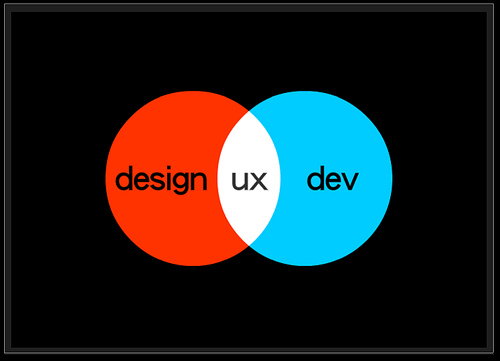
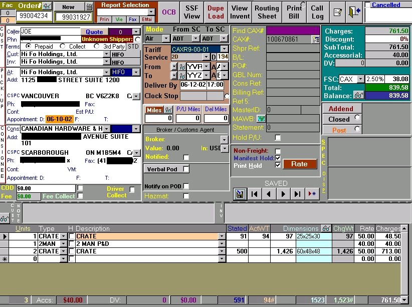
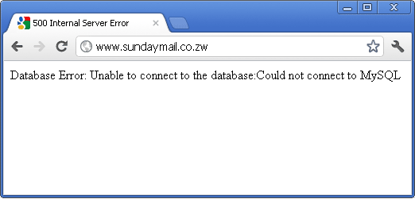
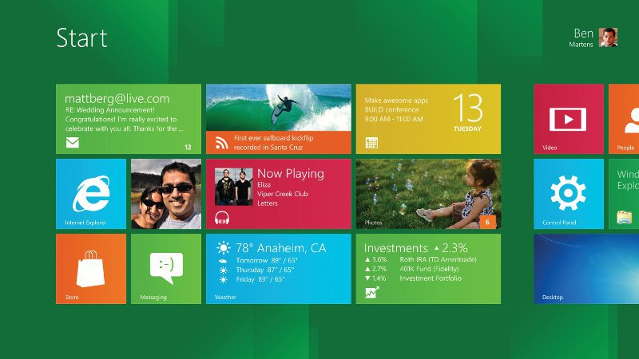
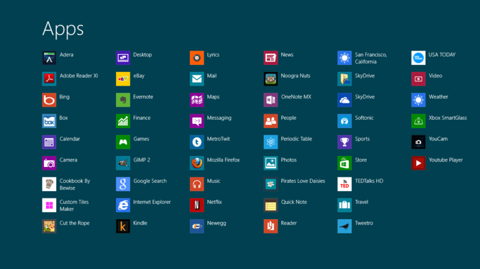

UX/UI
What they are
What UI/UX designers do
How EVERYONE can use UI/UX princliples
There is no one answer
Just think UI/UX
USER interface
A Tool
Point of interaction
Means of interaction between a user and a system
User experience
The interaction of a user with a system
The takeaways
Experience
How easy it was to eat
Texture
Taste
A Bad interface can lead to a bad experience
Why do clients come to us?
To build websites
Why do users go to their websites?
To consume their content
Why do clients have websites?
To inform people
To make money
And other reasons
Good UI/UX makes it easy and intuitive to consume that content
User experience and business objectives
Sometimes business objectives trump user experience
Many people consider themselves UI/UX designers

Some are just User Interface designers
Some never open photoshop
Some never code
Some use photoshop
Some use code
Some do both
user testing
- Analytics
- Usability Testing
- A/B testing
- Interviews
- Create personas
- Card Sorting
- Rapid prototyping
Even though everyone is not a UI/UX designer everyone should think about UI/UX
A PROGRAMMERS interface

Have you ever used software that was hard to use?
Ask yourself if you would be able to understand if you did not design it
UX first - build later
Sit down before coding and sketch out how it will work
Then write the code
Users are not very forgiving

a pretty design can be hard to use

Serving the same experience on desktop as tablet can lead to a bad experience

Don't reinvent the wheel
There is nothing wrong with following design patterns
Keep it simple
A really cool slide animation may look great in Chrome
It may lag on phones
It may break the site in IE 9
Things to keep in mind
Is the text easy to read?
Do the colors contrast enough? (color blind)
Will a user know what to do?
Does the design interfere with the user accessing content
Not everyone is a UI/UX designer
Everyone should think about UI/UX
There is no one solution
Think like a user